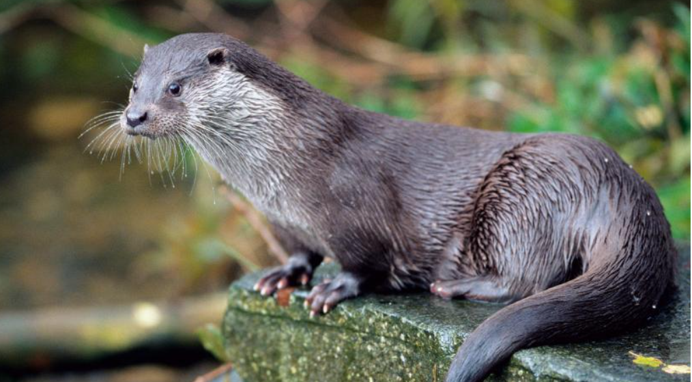
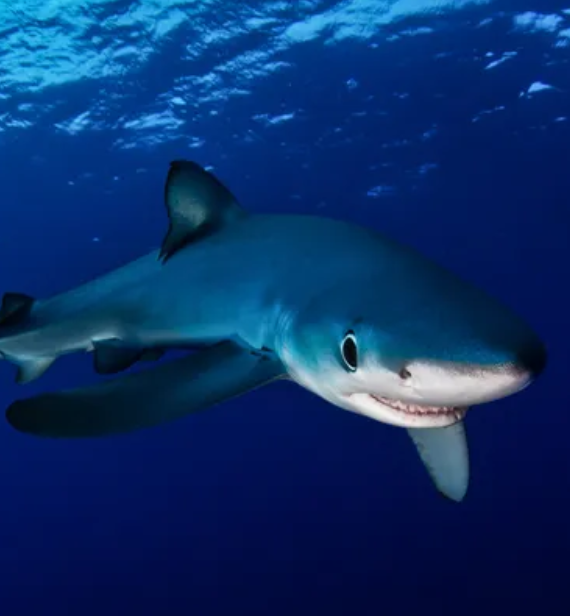
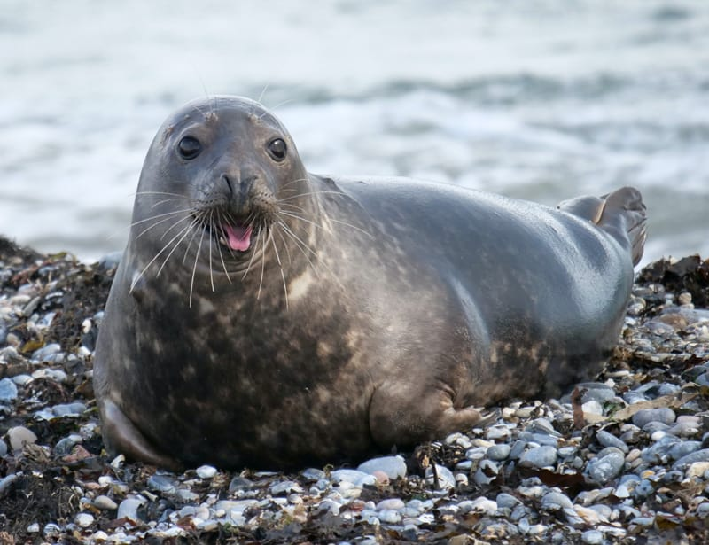
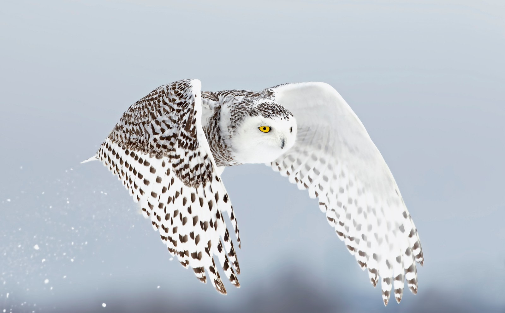

1. Otter
Coming in first place is the humble otter. Otters are a keystone species, balancing freshwater ecosystems. In saltwater ecosystems, otters preserve the natural balance of life by controlling sea urchin populations.

2. Shark
Sharks are another keystone species. As a carnivore, carnivores have a duty to keep plant-eating animals properly balanced within the bounds of ocean societies. If it weren't for sharks, plants and other invertebrates would not be able to consume matter resulting from decomposition. This would turn our oceans into a thick red sludge. You can thank sharks for indirectly keeping our oceans clean!

3. Seal
Seals and many other marine mammals are super intelligent, scientists rumoring that their intelligence and memory are about equivalent to that of a 3 year old. They have been known to play instruments and also contribute to the delicate balance of ocean life.

4. Hyrax
Hyrax are a unique breed of animals closely related to elephants, despite being smaller than cats! These critters may be unfamiliar to the general population but have been gaining popularity over the year. They have mischevious and devilish personalities.

5. Snowy Owl
Snowy owls are fierce hunters of the tundra. Their attacks are silent and quick, like most owls. These birds use their striking white coat and black stripes to blend into their surroundings. Sadly, they have been on the decline and are classified as vulernable.